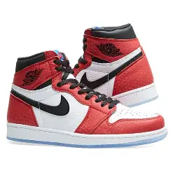
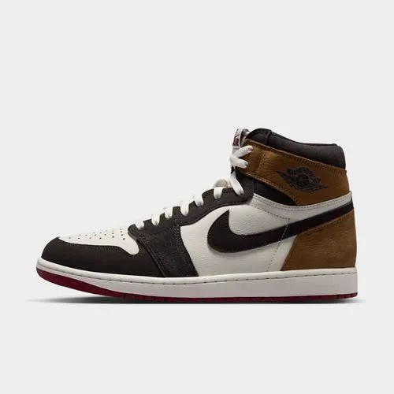

Formulario de registro
Tabla de Productos
| Producto | Cantidad | Precio Unitario |
|---|---|---|
| Nike Dunk Low | 4 | $728.900 |
| Nike Jordan Retro 1 | 9 | $1.129.000 |
| nike jordan retro 4 | 7 | 1.315.000 |
Producto Destacado

nike retro 1
Un ícono de la cultura urbana. Fabricados con cuero de primera calidad, corte alto para un mejor soporte de tobillo y la icónica cápsula Air en la suela que brinda comodidad en cada paso. Un clásico atemporal que transforma cualquier outfit.
$1.128.900 COP
gran comodidad y estilo
Nacidos en las canchas y adoptados por las calles, los tenis de la línea Nike Retro marcaron un antes y un después en el mundo del calzado. Esta colección reúne los clásicos de siempre con los acabados, colores y detalles que los convirtieron en verdaderos íconos globales. Ya sea que busques el toque icónico de unas Blazer, la presencia imponente de unas Jordan o el confort legendario de la saga Air Max, la línea Retro combina lo mejor de la nostalgia con la versatilidad que tu estilo diario exige.

Servicios de nuestra empresa
- Nike Zoom Vomero 5
- Nike V2K Run
- Nike P-6000
- Nike Air Force 1 '07
- Nike Dunk Low
- Nike Air Jordan 1 Low
- Nike Air Jordan 4
- Nike Air Max Dn
- Nike Air Max 1
- Nike Air Max 90
- Nike Air Max Plus (TN)
- Nike Air Max 270
- Nike Pegasus 41
- Nike Killshot 2
- Nike Court Vision Low
- Nike Tech Hera
- Nike Vomero Roam
- Nike Shox R4
- Nike Air Force 1 '07
- Nike Dunk Low
- Nike Zoom Vomero 5
- Nike Air Jordan 4
- Nike Air Jordan 1 Low
- Nike V2K Run
- Nike Air Max Dn
- Nike Air Max 90
- Nike P-6000
- Nike Pegasus 41